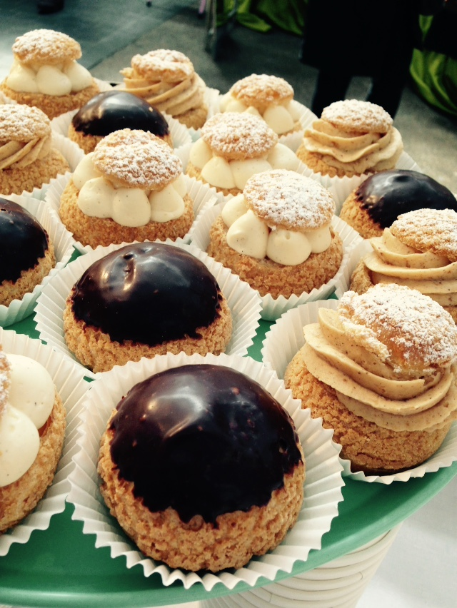
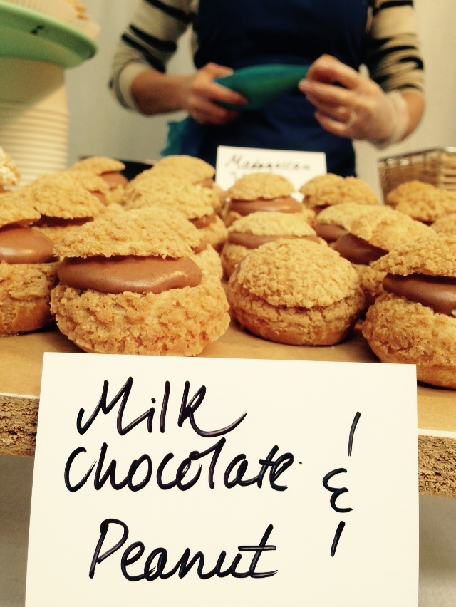
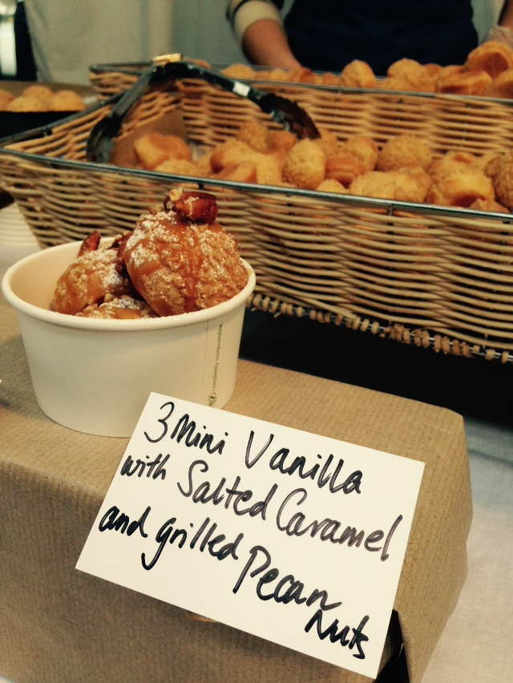

About Us
Welcome to Le Choux! A French patisserie stall in London specialising in choux pastry.
At Le Choux, it is our love of great patisserie that has brought us to give Londoners the same chocolate or sweet fix that the Parisians are so lucky to enjoy at lunch, after work or as an evening dessert.
Le Choux is a representation of our passion for artisan methods and great ingredients. All our choux buns are made with the finest available ingredients: locally sourced dairy, free-range eggs and organic flour. We use fine chocolate and our patisseries are naturally free from preservatives.
Our Products

Large Choux

Small Choux
